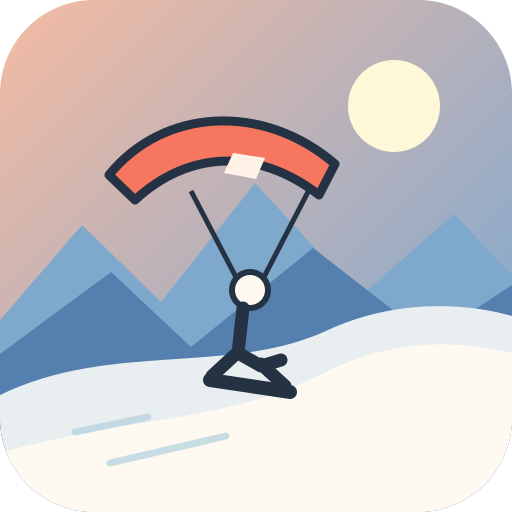
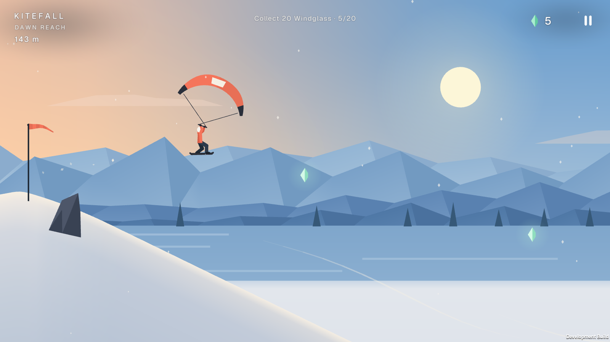
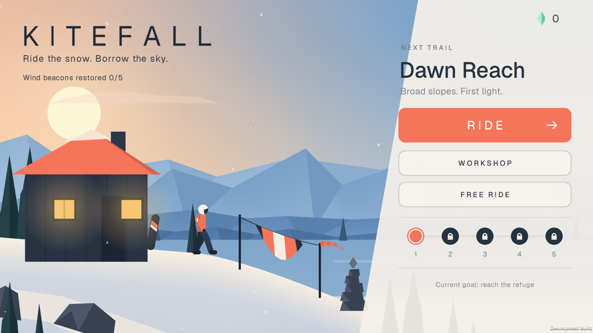
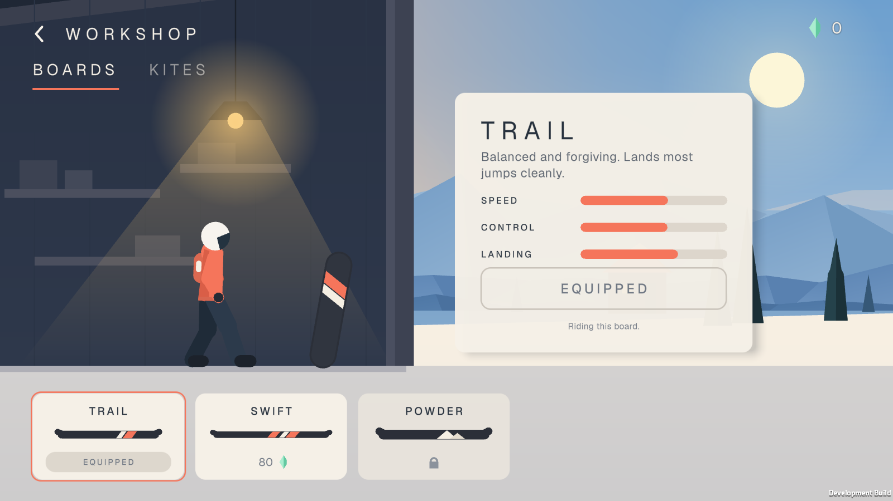

One-touch flow
Hold to crouch and charge an ollie, release to jump, then tap in the air to open your kite.

Android game · In developmentRide the snow. Borrow the sky.
You are a mountain courier restoring wind beacons at remote refuges. Stay low to build speed, then open your snowkite to catch the wind and reach the next slope.

Hold to crouch and charge an ollie, release to jump, then tap in the air to open your kite.
Ride Dawn Reach and Whisperwood, complete route challenges, or chase distance in Free Ride.
Earn Windglass on your runs and unlock boards and kites as you restore the mountain beacons.
The current playable build includes two trails, Free Ride, and a workshop. Further regions shown in the game are planned for later.


Kitefall saves progress and settings on your device. The current build has no ads, analytics SDKs, or in-app purchases.
Contact us for updates →